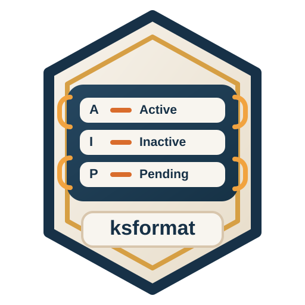

windows <- fmap_strata(
stratum = c("ARM_A", "ARM_A", "ARM_A", "ARM_B", "ARM_B"),
low = c(0, 7, 28, 0, 14),
high = c(7, 28, Inf, 14, Inf),
label = c("Baseline", "Wk1-3", "Wk4+", "Baseline", "Wk2+"),
inc_high = c(FALSE, FALSE, TRUE, FALSE, TRUE)
)
fnew(
windows,
type = "stratified_range",
name = "visit_window",
.other = "Outside window"
)
visit_df <- tibble(
arm = c("ARM_A", "ARM_A", "ARM_B", "ARM_B", "ARM_C"),
day = c(3, 35, 5, 40, 10)
) |> mutate(
window = fputk(arm, day, format = "visit_window"),
)
visit_df
#> # A tibble: 5 × 3
#> arm day window
#> <chr> <dbl> <chr>
#> 1 ARM_A 3 Baseline
#> 2 ARM_A 35 Wk4+
#> 3 ARM_B 5 Baseline
#> 4 ARM_B 40 Wk2+
#> 5 ARM_C 10 Outside window
Non-standard Applications of ksformat for Clinical Trials and Other Tasks
Source: vignettes/nonstandard-applications.qmd
1 Overview
ksformat is usually described as a SAS PROC FORMAT-like tool for ordinary value-to-label lookup. In practice, the package is useful in places where a clinical trial workflow needs more than a plain dictionary:
- protocol-defined visit windows
- subject- or arm-specific bucketing rules
- composite keys built from multiple columns
- reverse lookups for data cleaning and QC
- report-ready numeric display for listings and summaries
This article shows a few non-standard uses that come up in clinical trials and adjacent data tasks.
2 1. Protocol windows and subject-specific buckets
A common clinical-trials task is mapping visit-day values into protocol-defined windows. The same idea extends to arm-specific rules, where one stratum has a slightly different window structure from another.
This is useful for:
- visit window derivation in ADaM outputs
- protocol deviation checks
- windowed endpoint calculations
3 2. Composite keys for clinical mappings
Clinical trial data often uses multi-column logic: lab category + test code + unit, or population + analysis flag + visit type. fputk() can build a lookup from multiple fields without manually concatenating in the analysis step.
fnew(
fmap(
paste(
c("BLOOD CHEMISTRY", "COAGULOGRAM", "COAGULATION PANEL", "COAGULOGRAM"),
c("BLOOD", "BLOOD", "BLOOD", "BLOOD"),
c("ALB", "FIBRINO", "INR", "INR"),
c("g/L", "g/L", NA, NA),
sep = "|"
),
c("ALB", "FIBRINO", "INR", "INR")
),
type = "character",
name = "lb_param",
ignore_case = TRUE,
.other = NA
)
lab_df <- tibble(
LBCAT = c("BLOOD CHEMISTRY", "COAGULOGRAM", "COAGULATION PANEL"),
LBSPEC = c("BLOOD", "BLOOD", "BLOOD"),
LBTESTCD = c("ALB", "INR", "INR"),
LBSTRESU = c("g/L", NA, NA)
) |> mutate(
PARAMCD = fputk(LBCAT, LBSPEC, LBTESTCD, LBSTRESU, format = "lb_param", na_as_string = TRUE)
)
lab_df
#> # A tibble: 3 × 5
#> LBCAT LBSPEC LBTESTCD LBSTRESU PARAMCD
#> <chr> <chr> <chr> <chr> <chr>
#> 1 BLOOD CHEMISTRY BLOOD ALB g/L ALB
#> 2 COAGULOGRAM BLOOD INR <NA> INR
#> 3 COAGULATION PANEL BLOOD INR <NA> INRThe same pattern is useful for:
- AE grouping by term + severity + relation
- CM coding by medication + route + dose form
- endpoint derivations from multiple source fields
4 3. Reverse lookup for QC and cleaning
finputk() is helpful when raw labels must be normalized back to codes. In clinical programming, that makes it suitable for QC checks, mapping vendor text, and validating reviewer-facing labels.
finput(
fmap(
paste(c("PLACEBO", "DRUG A", "DRUG B"), c("PBO", "A50", "B100"), sep = "|"),
c(1L, 2L, 3L)
),
target_type = "integer",
name = "trt_code_inv"
)
#> KS Invalue: trt_code_inv
#> Target Type: integer
#> Mappings:
#> PLACEBO|PBO => 1
#> DRUG A|A50 => 2
#> DRUG B|B100 => 3
trt_df <- tibble(
ARMN = c("PLACEBO", "DRUG A", "DRUG B", "UNKNOWN"),
TRTCD = c("PBO", "A50", "B100", "X")
) |> mutate(
TRTSEQ = finputk(ARMN, TRTCD, invalue_name = "trt_code_inv")
)
trt_df
#> # A tibble: 4 × 3
#> ARMN TRTCD TRTSEQ
#> <chr> <chr> <int>
#> 1 PLACEBO PBO 1
#> 2 DRUG A A50 2
#> 3 DRUG B B100 3
#> 4 UNKNOWN X NATypical uses include:
- deriving internal codes from decoded labels in QC datasets
- validating data entry against controlled terminology
- reconciling spreadsheet exports back to source codes
5 4. Report-ready numeric formatting
ksformat can also be used where report output needs consistent numeric presentation. This is not a lookup table; it is a pattern-driven formatter.
fnew("$%,.2f", type = "numeric", name = "currency")
fnew("%.1f%%", type = "numeric", name = "pct")
summary_df <- tibble(
metric = c("Cost", "Response rate"),
raw = c(1234.56, 0.153)
) |> mutate(
display = c(fputn(raw[1], "currency"), fputn(raw[2] * 100, "pct"))
)
summary_df
#> # A tibble: 2 × 3
#> metric raw display
#> <chr> <dbl> <chr>
#> 1 Cost 1235. $1,234.56
#> 2 Response rate 0.153 15.3%Same result could be achieved using expression labels, but in base R, sprintf() itself does not support thousands separators such as commas. We can use formatC for the formatting purposes. Pattern-driven formatter looks simplier for such case.
stat_fmt <- fnew(
#"currency" = "sprintf('$%,.2f', .x1)", # Will not work!
"currency" = "formatC(.x1, digits = 2, big.mark = ',', format = 'f', decimal.mark = '.')",
"pct" = "sprintf('%.1f%%', .x1 * 100)",
name = "stat",
type = "character"
)
summary_df <- tibble(
metric = c("Cost", "Response rate"),
raw = c(1234.56, 0.153),
format = c("currency","pct")
) |> mutate(
display = fput(format, stat_fmt, raw)
)
summary_df
#> # A tibble: 2 × 4
#> metric raw format display
#> <chr> <dbl> <chr> <chr>
#> 1 Cost 1235. currency 1,234.56
#> 2 Response rate 0.153 pct 15.3%This is useful for:
- CSR and TLF output generation
- QA listings for counts and rates
- ad hoc review tables where consistent display matters
6 5. Bucketing dates into operational periods
Clinical teams often work with periods such as screening, treatment, follow-up, and analysis cut-offs. date_range and datetime_range let you keep those rules in one place instead of duplicating them in ad hoc code.
fparse(text = '
VALUE study_period (date_range)
[2024-01-01, 2024-02-01) = "Screening"
[2024-02-01, 2024-06-01) = "Treatment"
[2024-06-01, HIGH] = "Follow-up"
.missing = "No date"
;
')
obs_dates <- as.Date(c("2024-01-15", "2024-03-10", "2024-07-01", NA))
tibble(
date = obs_dates,
period = fput(obs_dates, "study_period")
)
#> # A tibble: 4 × 2
#> date period
#> <date> <chr>
#> 1 2024-01-15 Screening
#> 2 2024-03-10 Treatment
#> 3 2024-07-01 Follow-up
#> 4 NA No date7 6. Text generation for listings and narratives
Expression labels make ksformat useful for building small text fragments in reports. In clinical settings, that can be handy for reviewer comments, summary phrases, or footnotes.
This is especially useful when the label depends on:
- a measurement value
- a threshold or cohort-specific cutoff
- an external text fragment such as a reviewer comment
8 7. Practical cautions
These patterns are powerful, but they work best when the mapping rules are stable and owned by the analysis team. A few guardrails help:
9 8. fparse() syntax for all format families
If you want to express fnew()-style rules as text, fparse() supports the same VALUE/INVALUE families as the package parser. The main idea is:
- use
VALUEfor forward lookup formats - use
INVALUEfor reverse lookup formats - use
pattern = ...only for date/time/datetime formats - use
pattern: ...in the VALUE header for numeric display patterns - use interval syntax for numeric, date, datetime, and stratified ranges
9.1 VALUE blocks for discrete lookup
fparse(text = '
VALUE sex (character)
"M" = "Male"
"F" = "Female"
.missing = "Unknown"
.other = "Other"
;
VALUE age_group (numeric)
[0, 18) = "Child"
[18, 65) = "Adult"
[65, HIGH] = "Senior"
;
')9.2 INVALUE blocks for reverse lookup
fparse(text = '
INVALUE sex_inv
"Male" = "M"
"Female" = "F"
.missing = "U"
;
')9.3 Date, time, and datetime patterns
This is the direct fparse() equivalent of fnew_date(). For these blocks, pattern = ... is the right way to specify the display format.
fparse(text = '
VALUE enrldt (date)
pattern = "DATE9."
.missing = "Not Enrolled"
;
VALUE visit_time (time)
pattern = "TIME8."
;
VALUE stamp (datetime)
pattern = "DATETIME20."
;
')9.4 Numeric display patterns
Numeric display formatting now has its own parser syntax. Put the pattern in the VALUE header and keep the block otherwise empty except for optional .missing / .other directives.
fparse(text = '
VALUE currency (numeric, pattern: "$%,.2f")
.missing = "NO DATA"
;
VALUE pct (numeric, pattern: "%.1f%%")
;
')
tibble(
raw = c(1234.56, -7890.12, 0, NA),
currency = fputn(c(1234.56, -7890.12, 0, NA), "currency"),
pct = fputn(c(0, 12.3, -4.5, NA), "pct")
)
#> # A tibble: 4 × 3
#> raw currency pct
#> <dbl> <chr> <chr>
#> 1 1235. $1,234.56 0.0%
#> 2 -7890. -$7,890.12 12.3%
#> 3 0 $0.00 -4.5%
#> 4 NA NO DATA <NA>9.5 Range formats
Range formats are expressed with interval notation. The same syntax works for numeric, date_range, and datetime_range blocks.
When ranges overlap, the first matching range in declaration order wins — exactly the order the entries are written, top-down. No warning is emitted for overlaps, so keep the intended precedence explicit in the definition: put the specific (narrow) ranges before the general (wide) ones. To collect all matching labels instead of the first one, create the format with multilabel = TRUE (or an fparse (numeric, multilabel) header) and use fput_all().
fparse(text = '
VALUE study_period (date_range)
[2024-01-01, 2024-02-01) = "Screening"
[2024-02-01, 2024-06-01) = "Treatment"
[2024-06-01, HIGH] = "Follow-up"
;
VALUE shift (datetime_range)
[2024-01-15 00:00, 2024-01-15 08:00) = "Night"
[2024-01-15 08:00, 2024-01-15 16:00) = "Day"
[2024-01-15 16:00, 2024-01-16 00:00) = "Evening"
;
')9.5.1 Overlapping ranges: declaration order wins
Ranges are tried top-down in the order they are written; the first range that contains the value decides the label, and later (even narrower) ranges never get a chance. Keep the specific buckets above the general ones — a wide catch-all declared first shadows everything it covers:
fparse(text = '
VALUE grade (numeric)
[1, 3] = "Mild"
[4, 6] = "Severe"
[0, 10] = "Abnormal (any grade)"
;')
fput(c(2, 5, 9), "grade")
#> [1] "Mild" "Severe" "Abnormal (any grade)"
fclear("grade")
#> Format "grade" removed from library.
fparse(text = '
VALUE grade_wide_first (numeric)
[0, 10] = "Abnormal (any grade)"
[1, 3] = "Mild"
[4, 6] = "Severe"
;')
fput(c(2, 5, 9), "grade_wide_first")
#> [1] "Abnormal (any grade)" "Abnormal (any grade)" "Abnormal (any grade)"
fclear("grade_wide_first")
#> Format "grade_wide_first" removed from library.The first block yields "Mild" "Severe" "Abnormal (any grade)"; the second — with the wide range declared first — collapses everything to "Abnormal (any grade)". No warning is emitted for overlaps, so precedence belongs to the definition itself. When several labels are wanted for one value, make them explicit: declare the format multilabel and collect all matches with fput_all():
A note on key text: under type = "auto", a key becomes a range spec only when it actually parses as one. Plain text keys that merely happen to contain a comma ("San Francisco, CA", "Yes, unknown") stay character keys; a thousands-style key like "1,000" is flagged at creation and treated as discrete. Prefer explicit type = "character" for such mappings.
9.6 Stratified range formats
stratified_range combines a stratum with an inner range. The parser accepts the friendly STRATUM|[low, high) form.
fparse(text = '
VALUE visit_window (stratified_range, range_subtype: numeric)
"ARM_A"|[0, 7) = "Baseline"
"ARM_A"|[7, 28) = "Wk1-3"
"ARM_B"|[0, 14) = "Baseline"
.other = "Outside"
;
')
9.7 When to use fnew() anyway
fnew() remains the most concise way to create a report-formatting object when you already know you want a display pattern. fparse() is useful when the rule needs to be stored as text, versioned in a spec, or generated from another tool.
10 Conclusion
ksformat is not limited to simple code-to-label dictionaries. In clinical trials it can also serve as a compact rule engine for visit windows, composite keys, reverse mappings, report formatting, and small narrative fragments. That makes it useful anywhere repeated conditional logic would otherwise be spread across scripts, spreadsheets, or one-off helper functions.
fclear()
#> All formats cleared from library.